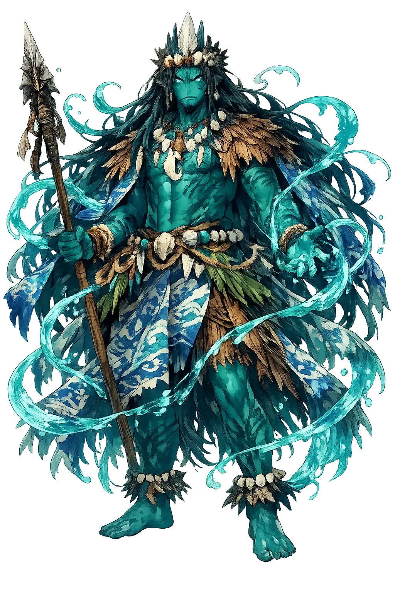
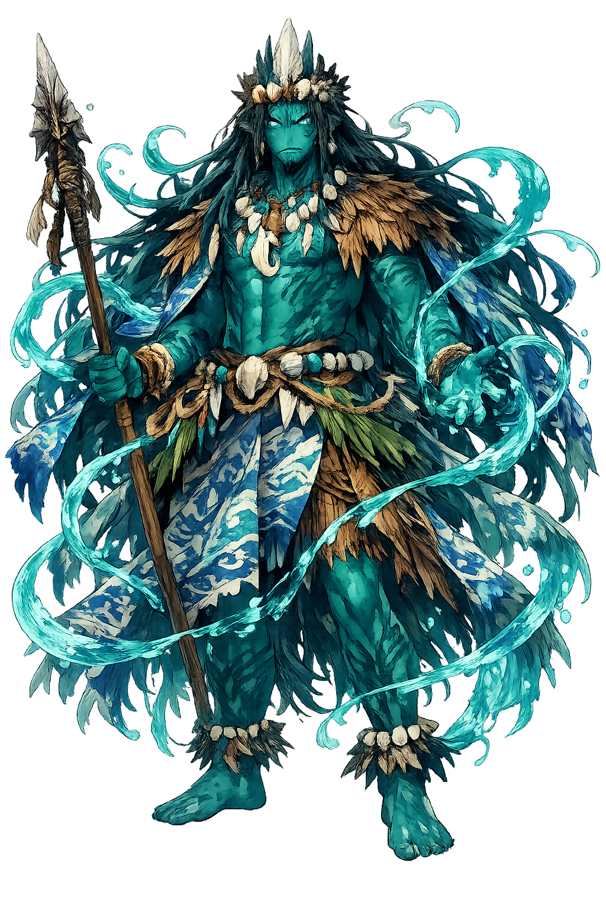

Unicode restoration and ASCII comparison
Kanaloa
The name survives in scholarly transliteration. Kanaloa is the standard Polynesian romanisation, documented in academic sources — “Hawaiian god symbolized by the squid or by the octopus, typically associated with Kāne”. Because the spelling uses only Latin letters, the form is the same in both ASCII and Unicode.
No indigenous writing system is securely attested for individual polynesian names. The form shown is a modern scholarly transliteration.
kanaloa
The plain kanaloa form is identical to the Unicode restoration. Because this name is already written in Latin letters, no diacritics, stress, or script information were lost — only capitalization differs.
Kanaloa
The Unicode restoration does not need to recover lost marks for Kanaloa. Its value is canonical spelling and consistent cataloguing, not the reconstruction of erased orthography. The domain is readable as-is to both DNS and humanity.
Kanaloa.com → kanaloa.com
The non-ASCII characters in Kanaloa are encoded while the ASCII remains visible. To the DNS, it is Punycode. To humanity, it is Kanaloa.
How Kanaloa is preserved in writing
No indigenous writing system is securely attested for individual polynesian names. The form shown is a modern scholarly transliteration.
Contribute scholarly provenance →How Kanaloa was spoken
Sea, Underworld, and Healing
Kānāloa is the Hawaiian god of the deep ocean, the underworld, and healing. He is the companion and sometimes rival of Kāne, the creator; while Kāne governs fresh water and life, Kānāloa rules the salt sea and the mysteries beneath it. He is associated with the octopus, whose arms reach in all directions like ocean currents.
The Pacific itself is his body, source of food, travel, and the unknown.
He receives the dead into the dark realm beneath land and sea.
Kānāloa and Kāne together discovered medicinal plants and healing arts.
The heʻe (octopus) is his animal, shape-shifting and intelligent.
Stories of Kanaloa
Hawaiian myths present Kānāloa as a complementary power to Kāne, the creator. Their partnership structures much of traditional cosmology.
In Hawaiian cosmogony, Kāne and Kānāloa are paired creator gods. Together they travel across the primordial ocean, striking the earth with their staffs to create springs and bring forth life. Kāne is the fresh water and the sunlight; Kānāloa is the salt sea that surrounds and sustains the islands. Their partnership is not hierarchy but dynamic balance.
Kānāloa fell ill, and no remedy could be found. Kāne prayed and was shown the healing plants of the forest and shore. After Kānāloa was cured, the two gods shared this knowledge with humankind, establishing the practice of lāʻau lapaʻau, traditional Hawaiian herbal medicine. Illness and cure both belong to Kānāloa's watery realm.
Kānāloa is also the lord of the underworld, the realm beneath the earth and sea where souls journey after death. Unlike the Christian hell, this realm is not primarily punitive; it is the mysterious mirror of the living world, governed by the same god whose waters feed the land above.
Kānāloa is the god of what we cannot see from the surface. His realm begins where the light fails and the pressure grows. To think of him is to remember that most of the living world is ocean, and that our small islands of land are exceptions to a watery rule.
Enter Extended Lore